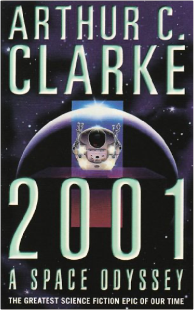

2001Arthur C Clarke  Arthur C. Clarke has been the presiding genius of science fiction for almost fifty years. His works include the ground-breaking and profound CHILDHOOD'S END, RENDEZVOUS WITH RAMA and EXPEDITION TO EARTH. Written when landing on the moon was still a dream, made into one of the most influential films of our century, brilliant, compulsive, prophetic, 2001: A SPACE ODYSSEY tackles the enduring theme of man's place in the universe. On the moon an enigma is uncovered. So great are the implications that, for the first time, men are sent out deep into the solar system. But, before they can reach their destination, things begin to go wrong, horribly wrong...Look out for more information on this book and others on the Orbit website at www.orbitbooks.co.uk  2010Arthur C Clarke 2010Arthur C Clarke To the spaceship Discovery, floating in the silent depths of space since Dave Bowman passed through the alien 'Star Gate', comes Heywood Floyd on a mission of recovery. What he finds near Jupiter is beyond the imaginings of any mere human.  A Christmas CarolCharles Dickens A Christmas CarolCharles Dickens Marley's face. It was not in impenetrable shadow as the other objects in the yard were, but had a dismal light about it, like a bad lobster in a dark cellar. Ebenezer Scrooge is unimpressed by Christmas. He has no time for festivities or goodwill toward his fellow men and is only interested in money. Then, on the night of Christmas Eve, his life is changed by a series of ghostly visitations that show him some bitter truths about his choices. Dickens' most influential book is a funny, clever, and hugely enjoyable story. The world is in flames . . .You look behind - there's nothing but smoke.Ahead of you the future has just burst into flames.Your life is on fire. The world's an inferno.You're burning . . . with passion and fear, with love and rage.You're burning for revenge.Burning For Revenge is the fifth volume in the award-winning Tomorrow series.  The Third Day, The FrostJohn Marsden The Third Day, The FrostJohn Marsden What's the biggest danger you can think of? THIS IS BIGGER. Nineteen Eighty-FourGeorge Orwell Hidden away in the Record Department of the sprawling Ministry of Truth, Winston Smith skilfully rewrites the past to suit the needs of the Party. Yet he inwardly rebels against the totalitarian world he lives in, which demands absolute obedience and controls him through the all-seeing telescreens and the watchful eye of Big Brother, symbolic head of the Party. In his longing for truth and liberty, Smith begins a secret love affair with a fellow-worker Julia, but soon discovers the true price of freedom is betrayal. |


 Made with Delicious Library
Made with Delicious LibrarySpringfield, State zipflap congrotus delicious library Doddridge, Edward